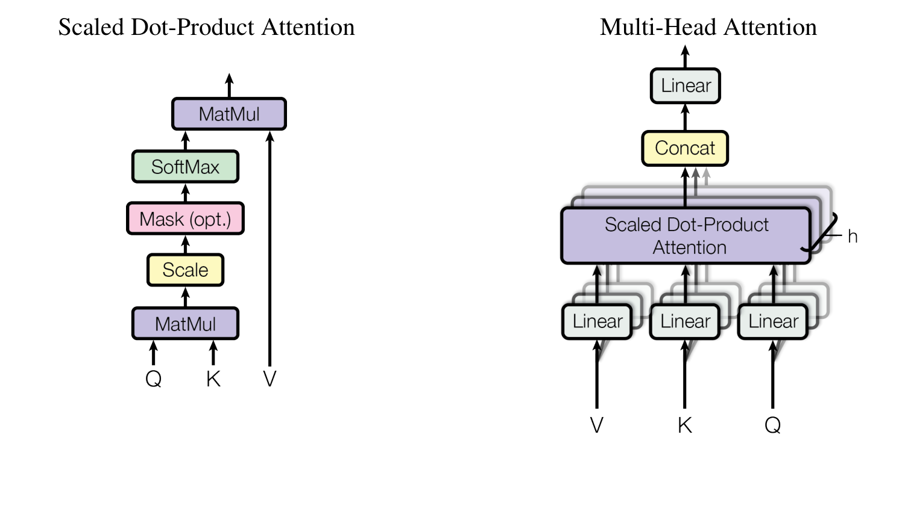
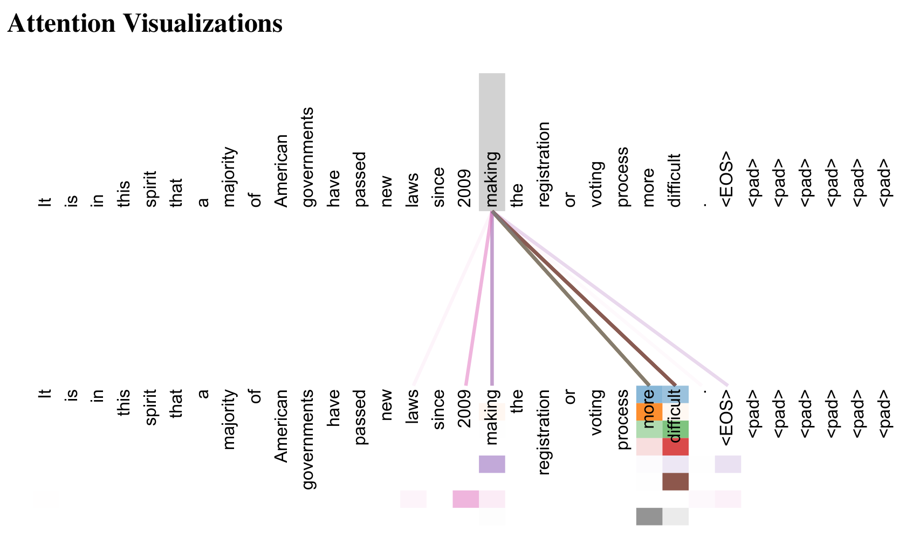
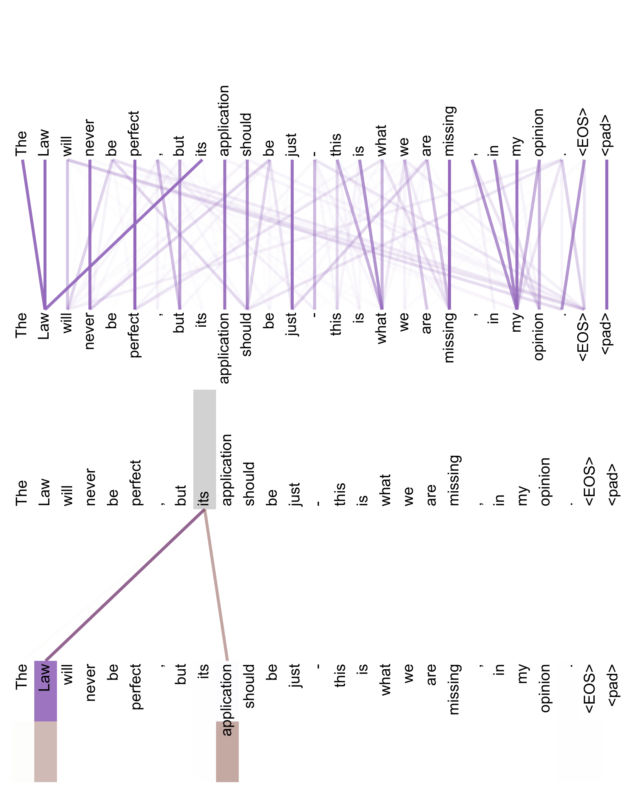
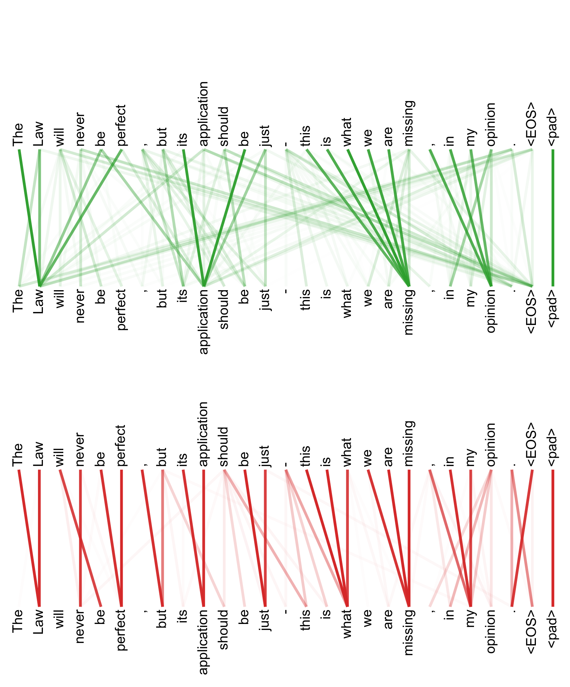

어텐션만 있으면 된다
기존의 우수한 시퀀스 변환 모델들은 주로 인코더와 디코더를 포함하는 복잡한 순환 신경망(RNN)이나 합성곱 신경망(CNN)을 기반으로 구축되었으며, 가장 뛰어난 성능을 내는 모델들 역시 어텐션 메커니즘을 통해 인코더와 디코더를 연결해 왔다.
본 논문은 순환(Recurrence)과 합성곱(Convolution)을 완전히 배제하고, 전적으로 어텐션 메커니즘에만 의존하는 새로운 단순 신경망 아키텍처인 트랜스포머(Transformer)를 제안한다.
두 가지 기계번역 과제에 대한 실험 결과, 트랜스포머는 질적으로 훨씬 우수할 뿐만 아니라 병렬 처리가 극대화되어 학습 시간을 획기적으로 단축시켰다.
WMT 2014 영어-독일어 번역 과제에서 기존 최고 기록(앙상블 포함)보다 2.0점 이상 높은 BLEU 28.4점을 달성했다. WMT 2014 영어-프랑스어 과제에서는 8개의 GPU로 단 3.5일 동안 학습하여 단일 모델 최고 기록인 BLEU 41.8점을 수립했으며, 이는 문헌상 기존 최고 모델들의 학습 비용에 비하면 극히 일부에 불과하다. 나아가 트랜스포머는 대규모 훈련 데이터와 제한된 데이터 모두에서 영어 구문 분석(Parsing) 과제에도 성공적으로 일반화됨을 입증했다.
1. 서론 (Introduction)
순환 신경망(RNN), 특히 LSTM과 GRU는 언어 모델링과 기계번역 등 시퀀스 변환 과제에서 오랫동안 최첨단 기술의 확고한 표준으로 자리 잡아 왔다.
그러나 순환 모델은 본질적으로 순차적인 연산 특성(Inherent Sequential Nature)을 지닌다. 즉, 현재 시점 $t$의 은닉 상태 $h_t$를 계산하려면 반드시 바로 직전 시점 $t-1$의 상태 $h_{t-1}$이 먼저 완성되어야만 한다.
컴퓨팅 하드웨어(GPU, TPU)는 수천 개의 코어로 대규모 행렬 연산을 동시에 병렬 처리할 때 최고의 효율을 발휘합니다. 하지만 RNN은 문장 길이가 길어질수록 한 글자씩 차례대로 줄을 서서 계산해야 하므로 훈련 시 시퀀스 내부 병렬화가 원천적으로 불가능합니다. 이는 대규모 데이터셋과 초거대 모델로의 확장을 가로막는 치명적인 장벽이었습니다.
어텐션 메커니즘은 시퀀스 내의 거리와 상관없이 입출력 간의 의존성을 직접 모델링함으로써 눈부신 성공을 거두었으나, 지금까지는 항상 RNN 구조의 부속물로서 결합되어 사용되었다.
본 연구에서는 순환 연결을 과감히 던져버리고, 오직 셀프 어텐션(Self-Attention)만으로 입력과 출력 사이의 전역적 의존성을 완벽하게 포착하는 아키텍처인 트랜스포머(Transformer)를 선보인다.
2. 배경 (Background)
순차적 연산을 줄이려는 시도는 합성곱 신경망을 기반으로 한 Extended Neural GPU, ByteNet, ConvS2S 등으로 이어져 왔다. 그러나 합성곱 기반 모델은 입력과 출력의 임의의 두 위치 사이의 신호를 연결하는 데 필요한 연산 횟수가 거리에 따라 선형($O(n)$) 혹은 로그 스케일($O(\log n)$)로 증가한다는 구조적 한계를 안고 있었다.
반면 트랜스포머는 임의의 두 단어 간 신호 전달에 필요한 연산 횟수를 상수 $O(1)$로 단축시켰다. 이로써 문장 내 단어 간의 거리가 아무리 멀어도 신호가 감쇠 없이 즉각적으로 전달된다.
3. 모델 아키텍처 (Model Architecture)
트랜스포머는 대다수의 경쟁력 있는 신경망 시퀀스 모델과 마찬가지로 인코더-디코더(Encoder-Decoder) 구조를 따른다.

좌측(인코더): 입력 단어 임베딩에 포지셔널 인코딩을 더한 뒤, $N=6$개의 동일한 레이어 스택을 통과한다. 각 레이어는 멀티-헤드 셀프 어텐션과 위치별 피드포워드 신경망(FFN)으로 구성되며 잔차 연결(Add)과 레이어 정규화(Norm)가 적용된다.
우측(디코더): 출력 임베딩에 포지셔널 인코딩을 더한 뒤 $N=6$개의 레이어를 통과한다. 미래 단어를 가리는 마스크드 셀프 어텐션, 인코더 출력을 참조하는 크로스 어텐션, 그리고 FFN의 3단계 서브레이어로 구성된다.
3.1 인코더 및 디코더 스택 (Encoder & Decoder Stacks)
인코더 (Encoder):
- $N=6$개의 동일한 층(Layer)이 직렬로 적층된다.
- 각 층은 2개의 서브레이어를 갖는다: (1) 멀티-헤드 셀프 어텐션, (2) 위치별 피드포워드 신경망(FFN).
- 각 서브레이어마다 잔차 연결(Residual Connection)과 레이어 정규화(Layer Normalization)를 적용한다:
$$\text{Output} = \text{LayerNorm}(x + \text{Sublayer}(x))$$
- 모델의 모든 서브레이어 및 임베딩 출력 차원은 일관되게 $d_{\text{model}} = 512$로 통일된다.
디코더 (Decoder):
- 인코더와 마찬가지로 $N=6$개의 동일한 층으로 구성된다.
- 인코더의 2개 서브레이어 외에, 인코더 스택의 출력을 키(K)와 밸류(V)로 받는 크로스 어텐션(Cross-Attention) 서브레이어가 추가되어 층마다 총 3개의 서브레이어를 갖는다.
- 디코더의 셀프 어텐션 서브레이어는 마스킹(Masking)을 적용하여 현재 위치 $i$의 단어가 미래 위치($j > i$)의 단어를 엿보지 못하게 차단한다. 이는 자기회귀적(Autoregressive) 생성 특성을 엄격히 유지하기 위함이다.
3.2 어텐션 메커니즘 (Attention)
어텐션 함수는 쿼리(Query)와 일련의 키-밸류(Key-Value) 쌍을 출력에 매핑하는 과정으로 정의할 수 있다. 여기서 Query, Key, Value 및 출력은 모두 벡터이다.

(우측) 멀티-헤드 어텐션 (Multi-Head Attention): $Q, K, V$를 각각 $h$개의 서로 다른 선형 투영($W_i^Q, W_i^K, W_i^V$)을 통해 저차원으로 변환한 뒤 독립적인 어텐션을 병렬 수행하고, 결과를 연결(Concat)하여 최종 선형 변환 $W^O$를 통과시킨다.
실제 계산에서는 여러 쿼리를 묶어 행렬 $Q$로 만들고, 키와 밸류 역시 행렬 $K$와 $V$로 묶어 일괄 연산한다: $$\text{Attention}(Q, K, V) = \text{softmax}\left(\frac{QK^\top}{\sqrt{d_k}}\right)V$$
💡 왜 $\sqrt{d_k}$로 나누어 주는가? (Scaling Factor)
차원 $d_k$가 작을 때는 내적(Dot-product) 어텐션과 바다나우의 가산(Additive) 어텐션이 비슷한 성능을 냅니다. 하지만 $d_k$가 커지면(예: 64차원), 두 독립 벡터의 성분 곱들의 합인 내적 값의 크기가 지나치게 커지며 분산이 $d_k$로 증가합니다. 내적 값이 너무 커지면 $\text{softmax}$ 함수의 기울기가 거의 0에 수렴하는 포화 영역으로 빠져버려 역전파 기울기 소실(Gradient Vanishing)이 발생합니다. 이를 방지하기 위해 $\frac{1}{\sqrt{d_k}}$로 스케일링하여 분산을 1로 유지합니다.
하나의 어텐션만 쓰면 문장 전체에서 단 하나의 지배적인 관계만 포착하게 됩니다. 트랜스포머는 $d_{\text{model}}=512$차원을 $h=8$개의 헤드로 쪼개어 각각 $d_k = d_v = 512/8 = 64$차원에서 어텐션을 병렬 수행합니다. 이를 통해 모델은 "문법적 주어-동사 관계", "대명사 지칭 관계", "문맥적 수식 관계" 등 서로 다른 부분 공간에서 다양한 의미적 연결 고리를 동시에 풍부하게 학습할 수 있습니다. $$\text{MultiHead}(Q, K, V) = \text{Concat}(\text{head}_1, \dots, \text{head}_h)W^O$$ $$\text{head}_i = \text{Attention}(QW_i^Q, KW_i^K, VW_i^V)$$
3.3 위치별 피드포워드 신경망 (Position-wise FFN)
인코더와 디코더의 각 레이어에는 어텐션 서브레이어에 이어 완전히 연결된 피드포워드 신경망이 포함되어 있다. 각 위치의 단어마다 독립적이고 동일하게 적용된다:
입출력 차원은 $d_{\text{model}} = 512$이며, 내부 은닉층 차원은 4배 확장된 $d_{ff} = 2048$이다.
3.5 포지셔널 인코딩 (Positional Encoding)
트랜스포머는 순환(RNN)도, 합성곱(CNN)도 사용하지 않기 때문에, 모든 단어가 한꺼번에 병렬로 입력되면 단어의 순서(Order) 정보가 완전히 소실된다. 따라서 시퀀스 내 각 토큰의 상대적 혹은 절대적 위치 정보를 주입해야만 한다.
본 논문에서는 서로 다른 주파수를 갖는 사인(Sine) 및 코사인(Cosine) 삼각함수를 활용한 고정 포지셔널 인코딩을 고안했다:
이 삼각함수 방식의 탁월한 장점은 임의의 고정 오프셋 $k$에 대해 $PE_{pos+k}$가 $PE_{pos}$의 선형 함수로 쉽게 표현된다는 점이다. 따라서 모델이 상대적 위치에 의한 주목을 쉽게 학습할 수 있으며, 훈련 중에 보지 못했던 훨씬 더 긴 문장으로도 손쉽게 외삽(Extrapolation)할 수 있다.
4. 왜 셀프 어텐션인가? (Why Self-Attention)
저자들은 시퀀스 모델링에서 셀프 어텐션 계층이 순환 계층 및 합성곱 계층보다 우월한 이유를 세 가지 측면에서 비교 분석했다:
| 계층 유형 (Layer Type) | 레이어당 계산 복잡도 | 순차적 연산 횟수 | 최대 경로 길이 (Path Length) |
|---|---|---|---|
| 셀프 어텐션 (Self-Attention) | $O(n^2 \cdot d)$ | $O(1)$ | $O(1)$ |
| 순환 신경망 (Recurrent / LSTM) | $O(n \cdot d^2)$ | $O(n)$ | $O(n)$ |
| 합성곱 신경망 (Convolutional) | $O(k \cdot n \cdot d^2)$ | $O(1)$ | $O(\log_k(n))$ |
| 제한적 셀프 어텐션 (Restricted) | $O(r \cdot n \cdot d)$ | $O(1)$ | $O(n/r)$ |
문장 길이 $n$이 단어 임베딩 차원 $d$보다 작은 일반적인 자연어 처리 상황($n < d$, 예: $n=50, d=512$)에서 셀프 어텐션은 RNN보다 연산량이 훨씬 적다. 무엇보다 순차적 연산 횟수와 최대 신호 전달 경로가 모두 $O(1)$이므로, 장거리 의존성(Long-range dependency)을 단 한 번의 연산으로 완벽히 학습할 수 있다.
5. 모델 학습 (Training)
- 학습 데이터:
- WMT 2014 영어-독일어: 약 450만 쌍 문장, 37,000개 공유 토큰의 BPE 어휘집.
- WMT 2014 영어-프랑스어: 약 3,600만 쌍 문장, 32,000개 WordPiece 어휘집.
- 하드웨어 및 소요 시간:
- 8개의 NVIDIA P100 GPU 사용.
- 기본 모델(Transformer-base): 100,000 스텝 (스텝당 0.4초, 총 12시간 소요).
- 대형 모델(Transformer-big): 300,000 스텝 (스텝당 1.0초, 총 3.5일 소요).
- 옵티마이저 및 웜업 학습률: Adam 옵티마이저 ($\beta_1=0.9, \beta_2=0.98, \epsilon=10^{-9}$). 초기 4,000 스텝 동안 학습률을 선형 증가시키고 이후 스텝의 역제곱근에 비례하여 감쇠.
- 정규화 기법: 서브레이어 드롭아웃 ($P_{drop}=0.1$) 및 라벨 스무딩 ($\epsilon_{ls} = 0.1$). 라벨 스무딩은 퍼플렉시티는 다소 손해를 보지만 실제 번역 정확도(BLEU)를 크게 향상시켰다.
6. 실험 결과 및 분석 (Results)
6.1 기계 번역 SOTA 달성 (Table 2)
WMT 2014 영어-독일어 및 영어-프랑스어 벤치마크 테스트 결과는 다음과 같다:
| 모델 (Model) | EN-DE BLEU | EN-FR BLEU | 학습 비용 (FLOPs) |
|---|---|---|---|
| ByteNet (Kalchbrenner et al., 2016) | 23.75 | - | - |
| MoE (Shazeer et al., 2017) | 26.03 | 40.56 | $9.0 \times 10^{19}$ |
| GNMT + RL 앙상블 (Wu et al., 2016) | 26.30 | 41.16 | $1.1 \times 10^{20}$ |
| ConvS2S 앙상블 (Gehring et al., 2017) | 26.36 | 41.29 | $1.2 \times 10^{20}$ |
| Transformer (base 단일 모델) | 27.3 | 38.1 | $3.3 \times 10^{18}$ |
| Transformer (big 단일 모델) | 28.4 | 41.8 | $2.3 \times 10^{19}$ |
트랜스포머 빅 모델은 영어-독일어에서 기존 앙상블 최고 모델들보다 무려 +2.0 BLEU 이상 높은 28.4점을 단일 모델로 갈아치웠습니다. 더욱 충격적인 사실은 학습 비용입니다. 기존 최고 모델들이 $10^{20}$ FLOPs 이상의 엄청난 자원을 쏟아부었던 반면, 트랜스포머는 그 1/5~1/30 수준의 훈련 비용($2.3 \times 10^{19}$)만으로 세계 최고 신기록을 경신했습니다.
6.3 어텐션 헤드의 놀라운 해석 가능성 (그림 3, 4, 5)
트랜스포머 내부의 멀티-헤드 셀프 어텐션들이 실제로 무엇을 학습했는지 시각적으로 분석했다.

문장 끝의 동사구 'making ... more difficult'가 수많은 수식어구를 뛰어넘어 문장 앞쪽의 주어 'The Law'와 완벽하게 연결되어 주목하고 있음을 보여준다.

"The animal didn't cross the street because it was too tired"라는 복잡한 문장에서, 대명사 'it'이 'street'이 아닌 피곤한 주체인 'The animal'을 정확하게 지칭하고 있음을 두 헤드가 분담하여 명확히 포착해냈다.

서로 다른 헤드들이 각각 주어-술어 분리, 수식어구 연결 등 인간 언어의 정교한 문법 구조를 자율적으로 분업하여 학습하고 있음을 시각적으로 증명한다.
7. 결론 (Conclusion)
본 논문은 순환 계층을 완전히 제거하고 오로지 멀티-헤드 셀프 어텐션(Multi-Head Self-Attention)으로만 구성된 최초의 시퀀스 변환 모델인 트랜스포머(Transformer)를 제시했다.
트랜스포머는 번역 과제에서 기존 순환 및 합성곱 모델보다 훨씬 빠른 학습 속도와 압도적인 번역 품질을 입증했으며, 기계번역을 넘어 구문 파싱 등 다양한 자연어 처리 문제로 성공적으로 확장될 수 있음을 증명했다.
이 논문이 탄생시킨 트랜스포머 아키텍처는 이후 BERT, GPT, T5, LLaMA, 그리고 오늘날의 모든 대규모 언어 모델(LLM)과 멀티모달 AI(Vision Transformer)의 불멸의 기반이 되었다.